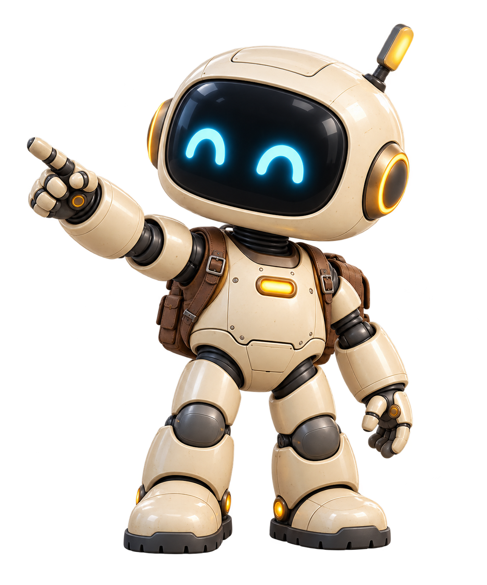
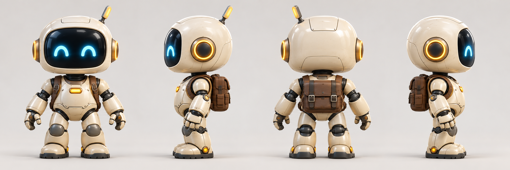
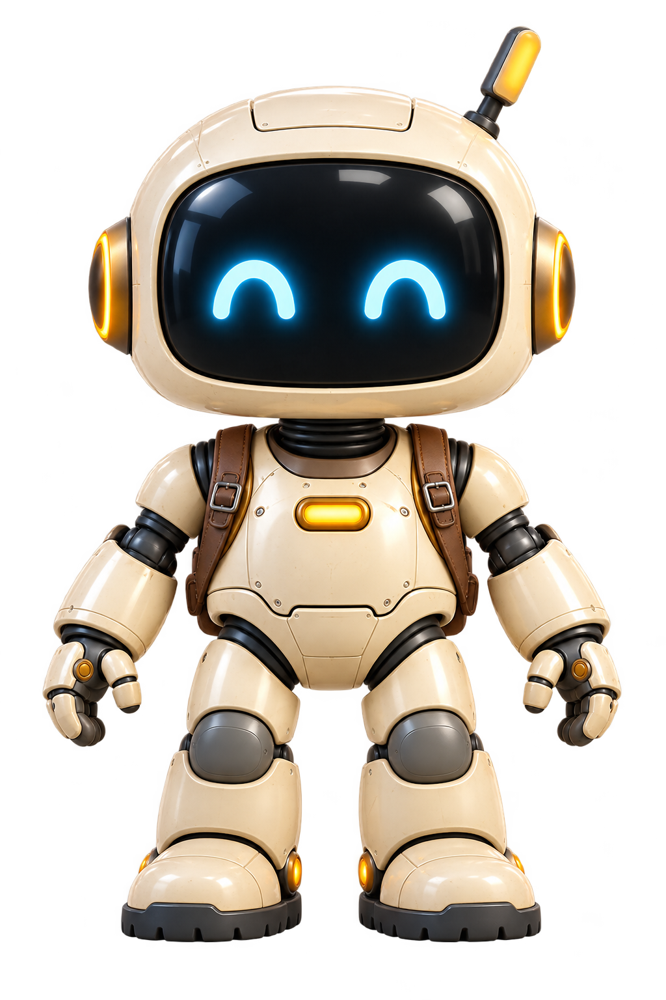
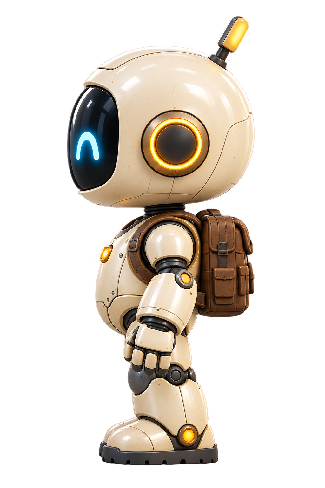
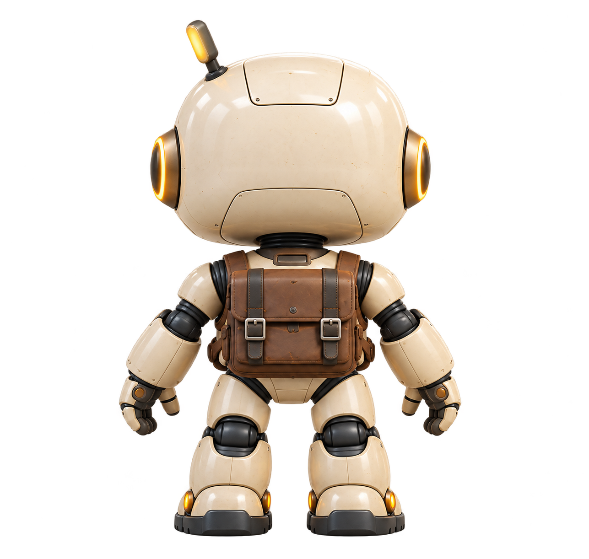
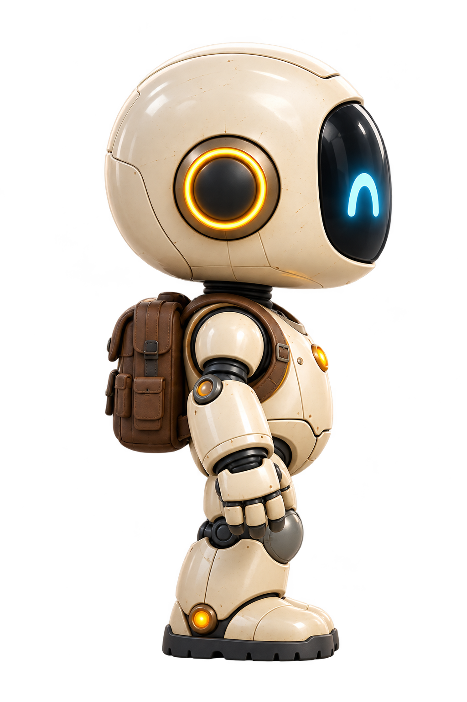

Открывать миры.
Создавать своё.
Высокий робот из шапки Playground: тёплая керамика, голубые глаза-дуги и походный рюкзак. Любопытный помощник, который приглашает сделать следующий шаг.

Одна конструкция, четыре стороны
Нажмите на изображение, чтобы открыть полный PNG.

Отдельные ракурсы
Полный рост · Студийные референсы PNG

Спереди
Один экран, две голубые дуги и одна антенна справа для зрителя.
Полный промпт ракурса
Профиль · лицо влево
Видны глубина экрана, круглый боковой модуль, антенна и рюкзак.
Полный промпт ракурса
Сзади
Рюкзак с двумя застёжками. Лицо и грудной индикатор скрыты.
Полный промпт ракурса
Профиль · лицо вправо
Противоположная сторона. Антенна на дальней стороне головы скрыта.
Полный промпт ракурсаТри четверти · приглашение
Правой рукой показывает путь. Спокойная поза и устойчивые ступни.
Полный промпт ракурсаЧто делает его узнаваемым
Большая округлая голова, короткие крепкие ноги, светлая сатиновая оболочка, единый чёрный экран, два голубых глаза, янтарные кольца и коричневый рюкзак.
Как сохранять личность
К новой генерации прикладывайте модельный лист. Сторона антенны закреплена за телом робота: слева сзади у него самого. Не зеркальте изображение для противоположного профиля. Полные ограничения и примеры сцен есть в паспорте.